| 日付 | 2026年4月12日（日） |
|---|---|
| 山域 | 奥多摩 |
| メンバー | グループ（7名） |
| 山行形態 | 日帰り |
| アクセス | 電車 |
| ルート (Map) | 軍畑駅 (9:36) - (10:09) 登山口 - (10:58) 常福院 (11:45) - (11:48) 高水山 - (12:14) 岩茸石山 (12:23) - (12:59) 惣岳山 - (14:15) 沢井駅 |
前回に引き続きのグループ登山。
始めましての方ばかりだが、今回は少しグループ登山に慣れたのと、
人数も少なめなので、落ち着いて参加できそう。
行先は高水三山。奥多摩入門の山で訪問は2007年以来だ。
軍畑駅到着。標高245m。
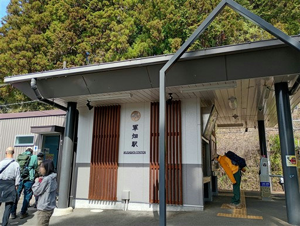
自己紹介をしたら出発。
春は車道歩きでも美しい景色が広がる。
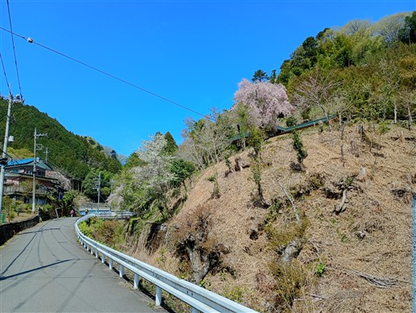
登山口に到着。
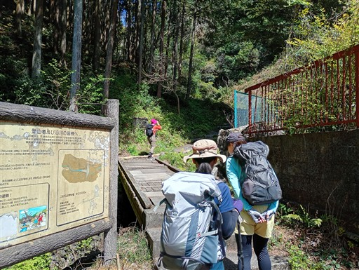
山の斜面が美しい。大好きな新緑の季節だ。
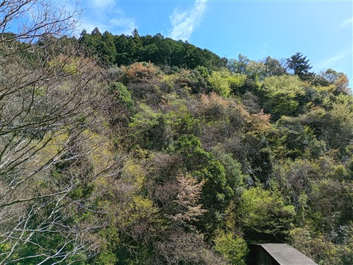
三合目の石柱。一合目と二合目は見逃してしまった。
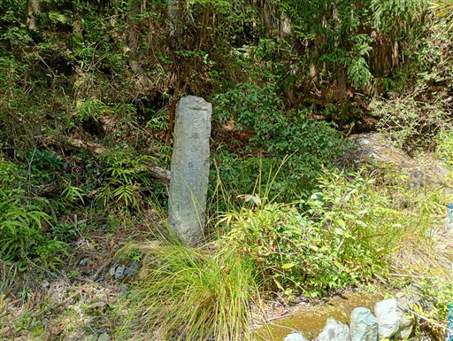
植林地帯に突入。こうなると美しい景色は広がらない。
念のためマスクをつける。
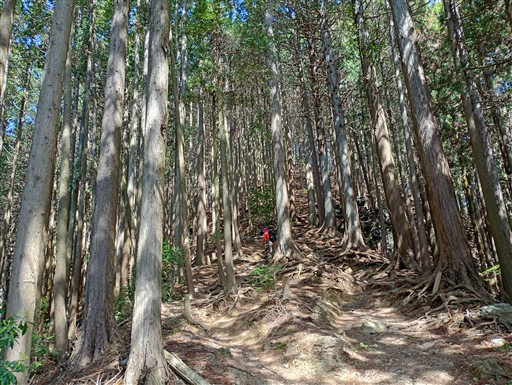
ミツバツツジの花が咲いている。
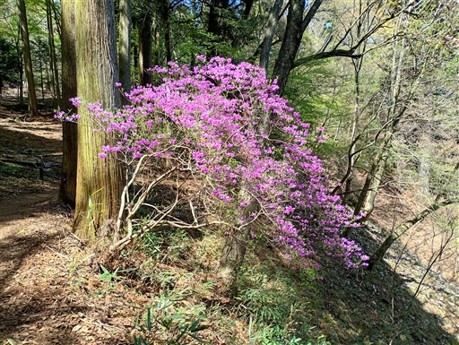
常福院に近づくと、なにやら笛や太鼓の音が聞こえてくる。
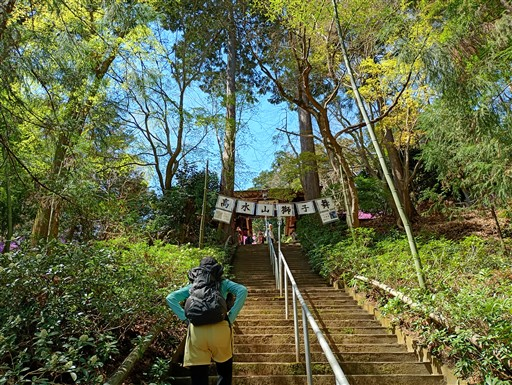
山門を潜る。
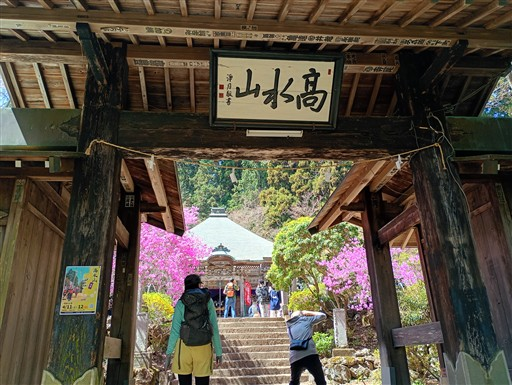
なんと獅子舞が披露されている。しばし見学。
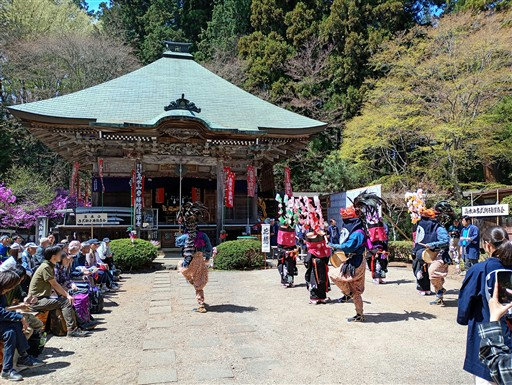
周囲はツツジの花が満開だ。
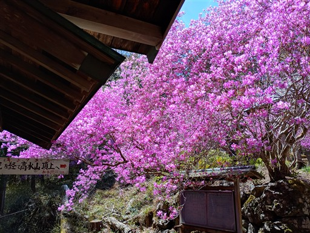
見学を終えたら少し進んだ先でお昼ご飯。
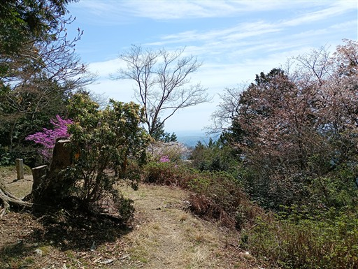
桜とツツジ。
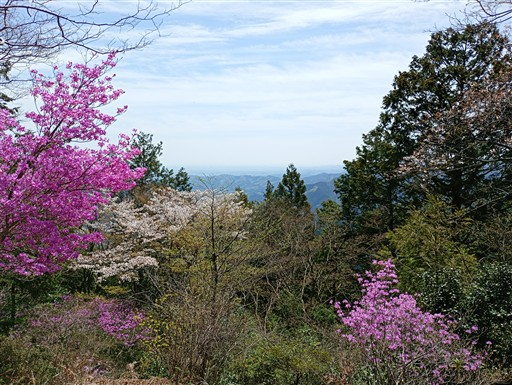
昼食を取ったら出発。高水山は目と鼻の先だ。
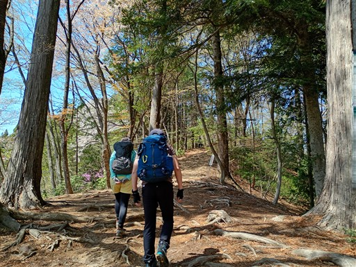
高水山に到着。標高759m。
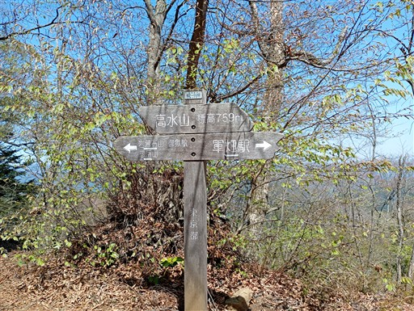
山頂の少し先にある祠にお賽銭が並べられている。
誰が並べたのだろう？
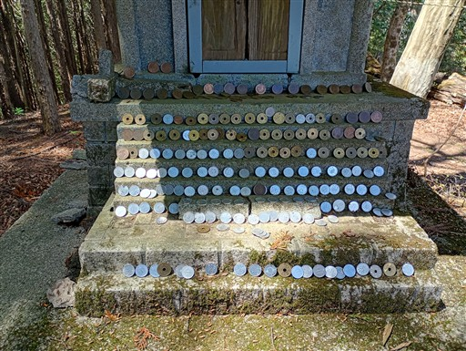
岩茸石山に向かう。この辺りの新緑はまだ淡い。
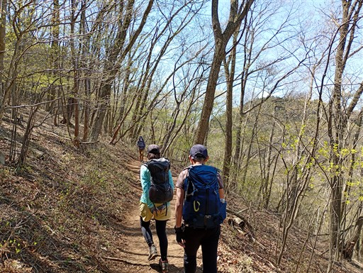
岩茸石山に到着。標高793m。
本日の最高峰。
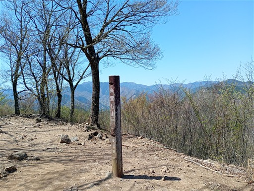
目の前に聳えるのは川苔山。
絶好の展望台という訳ではないが、奥多摩や奥武蔵の山々が見渡せる。
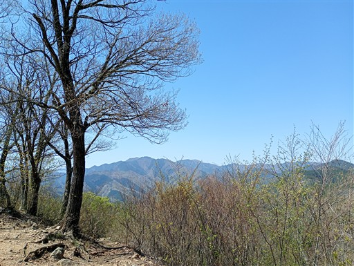
続いて惣岳山に向かう。
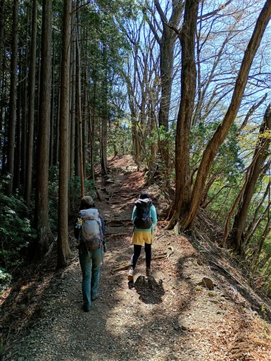
途中、木が切り開かれた禿山地帯に出てくる。
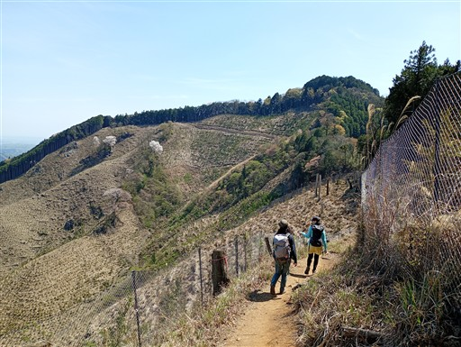
山の斜面の桜が美しい。
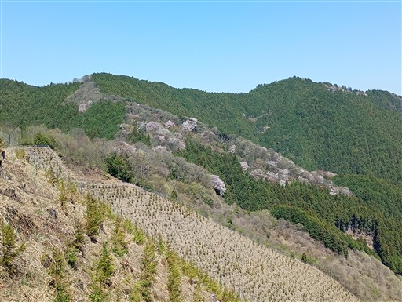
山頂直下にある岩場を超える。
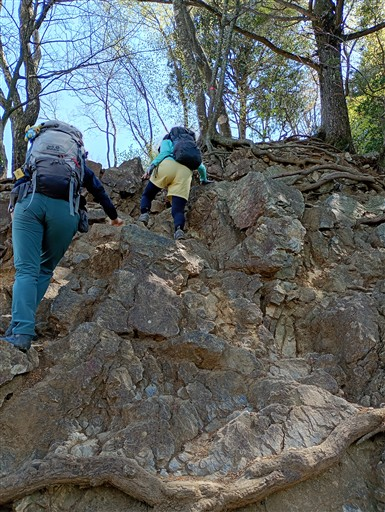
惣岳山に到着。標高756m。
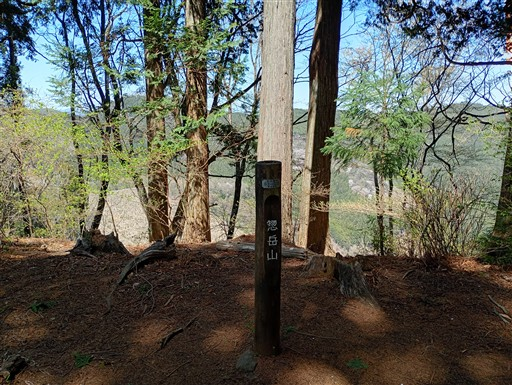
山頂には金網に囲まれた神社がある。
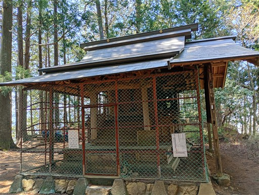
前回とは道が異なり沢井駅方面に下山する。
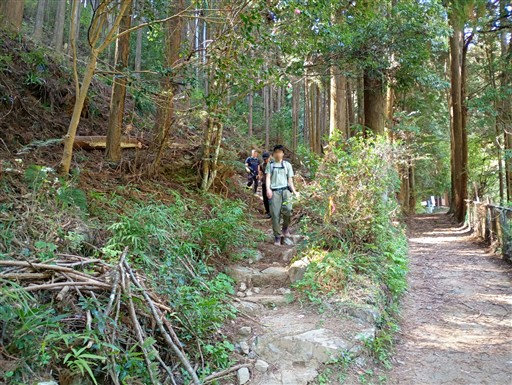
あとは車道歩き。ここの風景も素晴らしい。
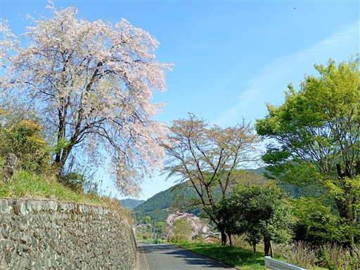
澤乃井園に寄り道する。結構賑わっている。
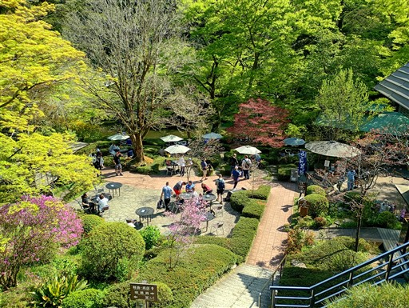
多摩川沿いにテーブルがあり、ここで軽く打ち上げ。
暑くもなく寒くもなく、ちょうどよい気温だ。
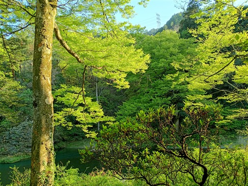
沢井駅に戻ってくる。標高240m。
久々の高水三山。軽い山歩きで、美しい風景を眺められ、楽しい時間を過ごせた。
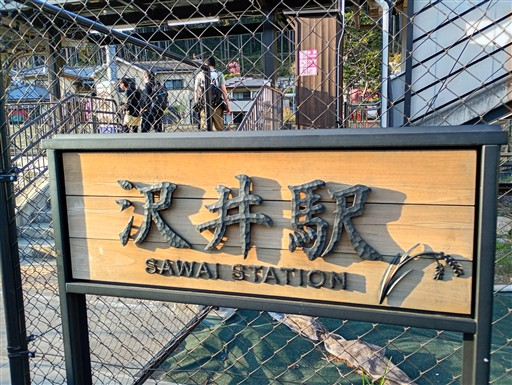